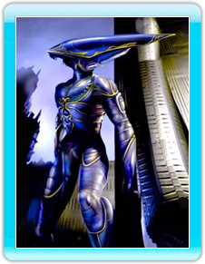
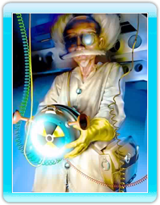

7 |
Les personnages |
 |
|
Au cours de la folle aventure de MDK2, vous aurez l'occasion d'incarner pas un, pas deux, mais trois personnages différents ! Mais attention, chaque personnage possède ses propres caractéristiques et vous devrez développer des techniques de jeu adaptées à leur personnalité respective. Découvrez sans plus tarder nos trois valeureux héros et leurs équipements pour le moins particuliers.

Kurt Hectic, le personnage principal du premier MDK, est un héros malgré lui. Autrefois simple employé de maison du professeur Fluke Hawkins, Kurt fut choisi pour porter la fameuse "bobinaison" et défendre la Terre contre l'invasion des extraterrestres parce qu'il n'y avait personne d'autre de disponible. La "bobinaison" a été conçue par le professeur Fluke Hawkins et offre l'avantage d'être à la fois une arme extraordinaire et une tenue de soirée originale et seyante. La "bobinaison" offre à Kurt des possibilités étonnantes. Il peut ainsi utiliser son viseur-zoom pour éliminer des ennemis situés à plus d'un kilomètre, déployer son parachute-bobine afin de flotter silencieusement dans les airs et infliger des dommages considérables à ses ennemis grâce à une puissante mitraillette astucieusement intégrée à la combinaison.

Max est un chien cyborg créé par le professeur Fluke Hawkins. Son anatomie particulière (2 jambes et 4 bras) lui permet d'utiliser jusqu'à quatre armes simultanément. A l'origine plutôt doux, Max a téléchargé par erreur tout un stock de séries B américaines mal doublées. Depuis, il a parfois des réactions un peu primaires, ce qui a néanmoins été utile pour protéger la Terre contre l'invasion des extraterrestres.

Le professeur Fluke Hawkins est le génie irascible qui a créé Max et développé la "bobinaison". Vous remarquerez rapidement qu'il ne ressemble pas beaucoup aux héros habituels des jeux vidéos. Ne vous inquiétez pas : il compense sa faiblesse physique par une ingéniosité débordante. |
 |
 |
 |